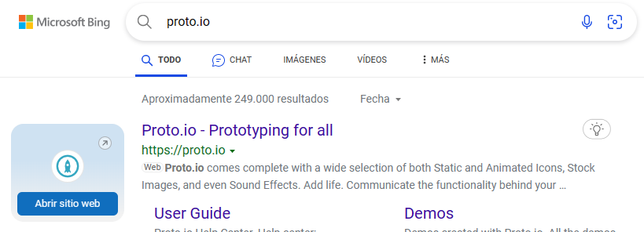
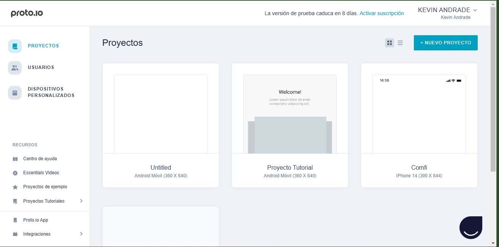

PROTO.IO

Para encontar la pagina solo deben buscar proto.io y entar en
el primer enlace que se encuentra.
como usarse

es muy sencillo solo debe registarte en un principio luego de eso
tendras que crear un nuevo proyectop el cual al momento de ingrasar te
dejaran elejir si lo quieres para telefono, computador, o tablet
YA EN LA PAGINA PRINCIPAL

ya en la pagina principal se encontarran funciones como las de seleccion
las cuales le daran plantillas que usted pueda colocar en la hoja principal
estan las funciones especiales pára usted colocar videos o imagenes,
junto conla de importar imagenes.
estan las formas y las funciones parea crear mas paginas en solo archivo.
el programa es espectacular y muy didáctico sus interacciones son excelentes tiene herramientas de diseño como de usuario crea cosas como deslizamiento de un programa y así tiene una prueba de 15 dias para que lo miren si les gusta ya luego se tendrá que pagar pero esta literalmente completo se puede seleccionar si el programa va hacer para celular para Tablet computador o reloj de cualquier dispositivo que el aplicativo tenga disponible y se puede interactuar con varias personas al mismo tiempo a través de proto.io club
como descargarlo

buscar descargar proto.io para pc, apareceran barias opciones descargar en el tercer enlace

luego solo darle al icono de descargar y esperara a la descarga
descargar de los archivos
solo deberan abrir como administrador sobre el icono paar empezar la descarga
darle aceptar a todo
en este punto te saldran los basicos procesos de aceptacion. acepta todo y dale a iniciar la descarga
esperar a que se ejecute el trabajo y ya
ya finalizada la descarga solo dale a ejecutar y ya podra usar la aplicacion
El programa que se escogio

este es el programa que escogimos entre el grupo ya que este programa es muy bueno es casi igual al programa de proto.io pero con poco mas de interacción atraves de sus funciones es un poco mas completo aunque para desbloquiar la cantidad de características que tiene se debe realizar un pago es muy bueno y creo qu euna de las mejores de estas listas de aplicaciones es muy didáctica tiene varias herramientas uso completo y rápido para creart bocetos wireframes de sitios y aplicaciones basado en el uso rápido y simple tiene m uchas herramientas de usuario y personalización de elementos de interfaz se puede colaborar por equipos de diferentes lugares en un solo prototipo y puede explorar con pdf o a imágenes png además que su estado gratuito permite la utilidad de un mes de uso gratis.